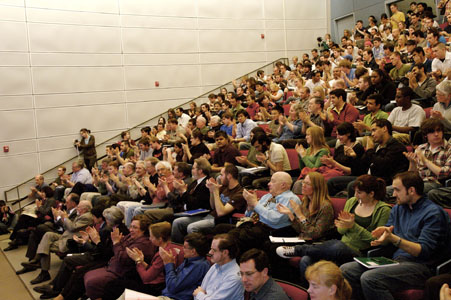

Richard Clarke
The Sidney Topol Distinguished Lecturer Series
Thursday, April 2, 2009
4:00pm
ECSC II, Room 119
Faculty Hosts: Rick Adrion, Kevin Fu
“The missing pieces of the three 21st century wars: Iraq, Afghanistan and Cyberspace”

Abstract
Richard Clarke was appointed by President Clinton as the first National Coordinator for Security, Infrastructure Protection, and Counterterrorism in May 1998 and continued in that position under George W. Bush. Until March 2003 he was a career member of the Senior Executive Service, having begun his federal service in 1973 in the Office of the Secretary of Defense, as an analyst on nuclear weapons and European security issues. In the Reagan administration, Mr. Clarke was the Deputy Assistant Secretary of State for Intelligence. In the first Bush administration, he was the Assistant Secretary of State for Politico-Military Affairs.
In addition to his professional activities, Richard Clarke is the author of works of both fiction and non-fiction including the previous #1 New York Times Best-Seller "Against All Enemies".